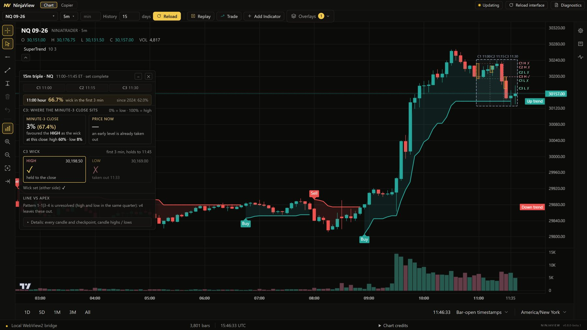
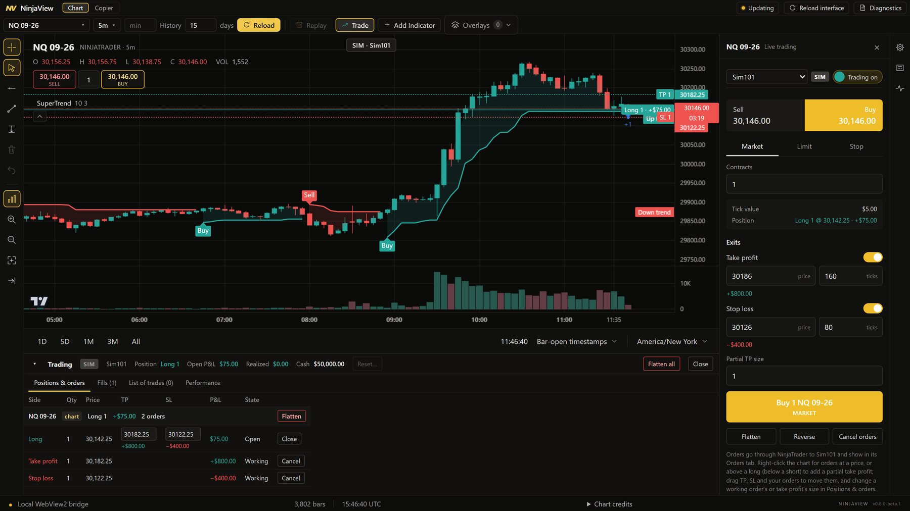
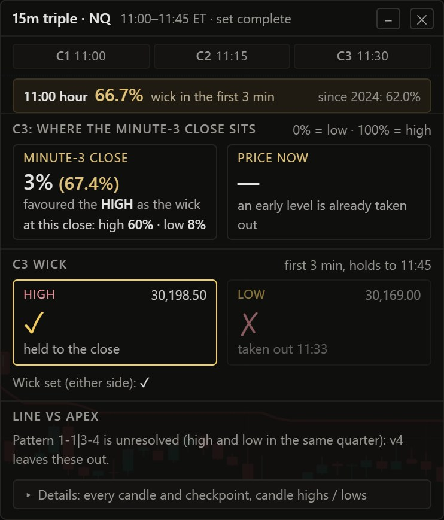
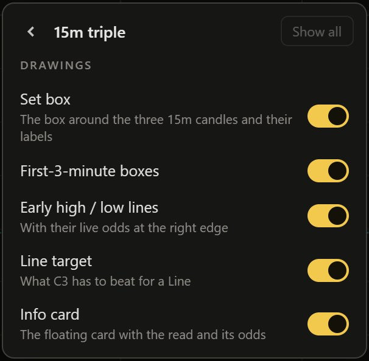

NinjaView is a TradingView-style chart window that runs inside NinjaTrader, on your NinjaTrader data and accounts. Trade from the chart, replay the market, copy trades across your accounts, and run Pine Script and NinjaTrader indicators side by side.
Windows x64 · NinjaTrader 8.1.9+ · Not affiliated with TradingView or NinjaTrader

Open New › NinjaView in NinjaTrader. The window uses NinjaTrader's market data, accounts and order routing, so it fits alongside the platform you already use.

Trading involves substantial risk of loss. Try a simulation account first.
Fills are simulated on one-minute bars; nothing is sent to your broker. The tour was recorded in the Slate theme on real NQ data; its trades are simulated.


The Overlays menu switches chart overlays on and off, and a cog on each one switches any of its drawings.
The Pack edition adds PackView: the Pack's read on price for NQ, ES, GC and RTY, live and in Bar Replay, with the Asia, London, NY1 and NY2 ranges, P12, the prior day's levels with their Candle Science odds, the 9am hour, the four-step checklists and the three-hour Line / Apex block with Mick's workbook numbers.
The Copier tab copies every order on one account to the others you select, at the same size, on your PC. Save accounts as Groups and swap them from the account list. It stops with an alert if anything looks wrong. New and lightly tested: check your prop firm's rules on copying first.
Up to 16 at once in a TradingView-style legend: your TradingView Pine scripts and your installed NinjaTrader indicators (experimental), with hide, show and settings. They stay on the chart when you reopen the window.
Two interface themes, plus TradingView-style chart settings: candle, wick and border colours, gradient background, grid, crosshair, price line and a countdown to the bar close.
Load a TradingView .pine indicator and see it calculated from NinjaTrader's own data, updating tick by tick. No conversion to NinjaScript.
Add Pine scripts in the NinjaView window, or add the NinjaView Pine indicator to a regular NinjaTrader minute chart. Inputs show up in the settings and save with your workspace.
Types, methods, enums, arrays, maps, matrices and named arguments, most of ta.*, math.* and str.*, every plot style, boxes, lines, linefills, labels, polylines and tables. Pine v1–v4 scripts are upgraded automatically.
Developing bars update on every tick. var state rolls back between ticks and varip keeps intrabar changes, matching TradingView's realtime rules. Oscillators get their own panel.
Scripts that import open-source libraries fetch the exact version from TradingView once, verified and cached. Local copies always win.
Same-symbol request.security at minute, daily, weekly and monthly timeframes, built from one-minute data.
It's an independent, partial implementation: some scripts won't compile yet, and strategy() scripts show their plots without backtesting their orders. What's supported.
-NinjaScript.zip. Leave it zipped.Full details, checksums and rollback: install guide.
It's a chart window that runs inside NinjaTrader 8 (New › NinjaView), so many people trade from it instead of a NinjaTrader chart. It uses NinjaTrader's market data, your NinjaTrader accounts and NinjaTrader's order routing, so NinjaTrader stays open and connected underneath, and its own charts keep working alongside.
Yes. Market, limit and stop orders go through NinjaTrader to the account you choose, the same way as Chart Trader. Set a stop loss and one or several partial take profits, drag them on the chart, place a draft order before sending it, and see every position on the account with Flatten per instrument. Trading starts switched off in every window, live accounts are labelled LIVE, and NinjaView never sees your broker login. Trading involves substantial risk of loss: try a simulation account first.
Yes. Click Replay, pick any bar (or a random one) and play the market forward bar by bar or minute by minute, with your indicators replaying alongside. Paper trade with a TradingView-style order panel, quick buy and sell buttons and a right-click menu, with take profit and stop loss. Results include P&L, win rate, profit factor and drawdown, and you can save the trade log. Fills are simulated on one-minute bars and nothing is sent to your broker.
Yes. The Copier tab copies every order you place on one NinjaTrader account to the others you select, at the same size, on your PC with no outside service. Save sets of accounts as Groups and swap them from the account list. It stops with an alert if anything looks wrong. It is new and lightly tested, and you should check your prop firm's rules on copying first.
Yes. NinjaView loads a TradingView Pine Script indicator file (.pine) and runs it on NinjaTrader's own market data, in the NinjaView window or on a regular NinjaTrader chart with the NinjaView Pine indicator. There is no manual conversion to NinjaScript: Pine v5 and v6 run directly and older v1–v4 scripts are upgraded automatically.
Pine v5 and v6 indicators with var and varip state, user-defined types, methods, enums, arrays, maps, matrices, named arguments, most ta, math and str functions, every plot style, fills, linefills, hlines, shapes, boxes, lines, labels, polylines and tables, higher-timeframe requests, plus public library imports. It is a partial implementation, so some scripts may not compile yet, and strategy() scripts show their plots without backtesting their orders.
Yes, experimentally. Add Indicator lists every installed NinjaTrader indicator, built-in and custom. NinjaView runs it on NinjaTrader's own engine and shows its plots, drawings and anything it paints on the chart, with its settings editable in NinjaView, live and in Bar Replay. Run up to 16 indicators at once, Pine and NinjaTrader mixed. NinjaTrader strategies are not supported yet.
An overlay for NQ and ES in the Overlays menu. It boxes each hour's three 15-minute candles and their first 3 minutes, with the odds that the early high or low holds as the candle's wick, updated live, and Line vs Apex from the second candle on. A cog switches any of its drawings on or off. It shows statistics; it places no orders.
A chart overlay in the Pack edition of NinjaView, for Pack members. It marks the Pack's read on price for NQ, ES, GC and RTY (and their micros): the Asia, London, NY1 and NY2 ranges, P12, the prior day's levels with their Candle Science odds, the MFE ladders, the 9am hour and the three-hour Line / Apex block, with Mick's workbook numbers credited to him. Its history numbers are built into each release and the day's levels come from your NinjaTrader data. It shows statistics; it places no orders.
Usually closely, but not guaranteed. NinjaView is an independent implementation and results also depend on matching data, session and history. Compare on the same contract, timeframe and date range before relying on a script.
Time-based minute charts (1 to 1440 minutes) in NinjaTrader 8.1.9 and later on Windows x64. Tick, range, Renko and daily charts are not supported yet.